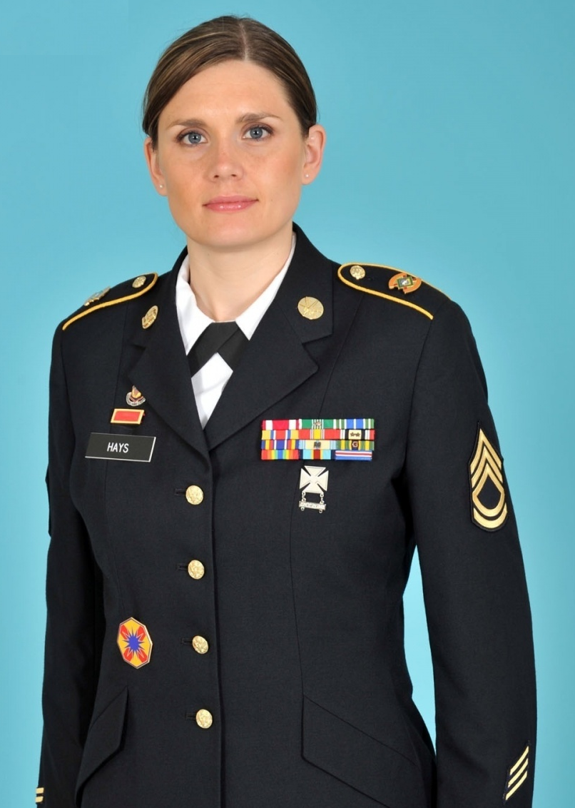

Sergeant Hays
Sergeant Hays was born and raised in a small town in the United States. From a young age, he knew he wanted to serve his country and make a difference in the world. After graduating high school, he enlisted in the United States Army and began his training. Sergeant Hays quickly distinguished himself as a leader among his peers. He was a natural strategist and had a talent for motivating and inspiring those around him. He rose through the ranks quickly and was eventually assigned to a special forces unit.
Sergeant Hays saw action in some of the most dangerous parts of the world. He served multiple tours of duty in Iraq and Afghanistan, where he was involved in some of the most intense battles of the conflict. Despite the dangers he faced, Sergeant Hays always put the safety of his men first, and his bravery and dedication earned him the respect of all who served alongside him. Throughout his military career, Sergeant Hays received numerous commendations and awards, including the Bronze Star and the Purple Heart. But he never saw these as individual achievements - instead, he saw them as a reflection of the hard work and dedication of the entire team.